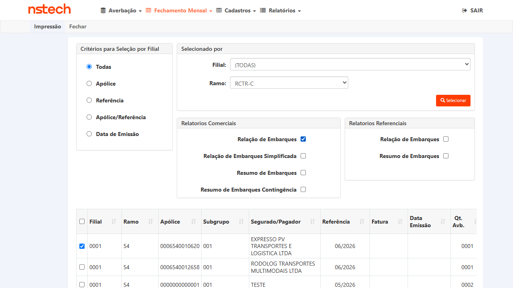
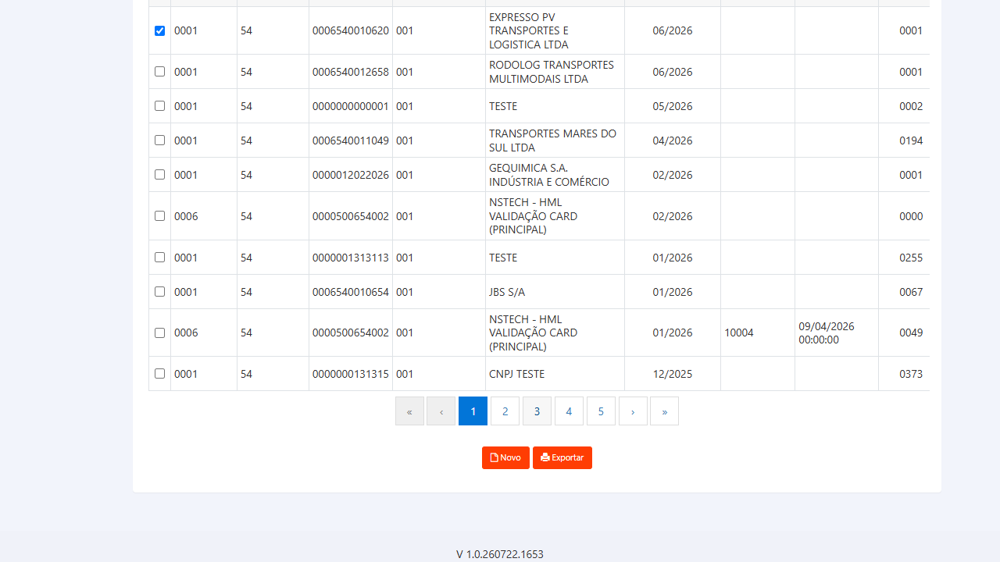

| Sistema | CITWEB — site Nacional |
| Módulo | Fechamento Mensal → Prévia / Emissão / Impressão → Relatórios Comerciais → Relação de Embarques |
| Ambiente | FAIRFAX HML — https://fairfax-hml-faturamento.nsseg.com.br/login/ |
| Credenciais | Usuário ROT_AUTO (senha em .env — HML_FAIRFAX_CITWEB_PASS, não versionada) |
| Build (no bug) | V 1.0.260706.1919 |
| Massa | Apólice 1 · Ramo 54 (RCTR-C) · Filial 0001 · Subgrupo 001 · Referência 05/2026 · Fatura 10095 |
| Averbações (c/ DDR) | 202600000069 e 202600000070 — DDR CNPJ [CNPJ-REDIGIDO], tipo S (Subcontratação) |
| Origem | Bug encontrado na homologação do PBI #7470 (CT-DDR-011, reprovado 16/07/2026) |
| Plano | 16/07/2026 — Reteste (aguardando correção do dev e deploy em HML antes de executar) |
CA-08 (definido por Fabiola Costa, comentário AzDO 13/07/2026): a Relação de Embarques de Prévia, Emissão e Impressão deve possuir a coluna CNPJ Tomador (CNPJ da DDR informado na averbação) e uma coluna que indica se foi aplicado DDR ou não.
Resultado obtido (bug): a Relação de Embarques NÃO possui essas colunas. O CNPJ da DDR + indicador aparecem apenas embutidos na coluna genérica "Observações Gerais" — ex.: **[CNPJ-REDIGIDO]:(S) — não em colunas dedicadas. Verificado idêntico nos três contextos (Prévia, Emissão, Impressão).
Arquivo evidência (bug): COM-EMB-RCTRC-0000000000001-001-05-2026-10095.xlsx
f_tar_adl_ddr=2500, i_opr_ddr='S'). O dado existe e está certo.CNPJ Tomador e DDR aplicado como colunas próprias nos três contextos (Prévia / Emissão / Impressão).| Colunas hoje (20) |
|---|
| Nº Averbação · Data de Saída · Conhecimento Série/Nº · Placa do Veículo · Estado Origem · Estado Destino · Valor do Embarque · Valor do Container · Meio de Transporte · Mov. Interna · Taxa Básica · %Benef. Interno · Adic. Roubo · Adic. Fluvial · Outros Adicionais · %Agravo · Adic. Lib. Pista · Valor do Prêmio · Protocolo CITNET · Observações Gerais |
| Colunas esperadas pós-fix (+2) |
| CNPJ Tomador (CNPJ da DDR) · DDR aplicado (indicador S/N) |
Reteste (positivo) — verifica a correção no fluxo de Emissão, com averbação que teve DDR aplicado (tipo S).
https://fairfax-hml-faturamento.nsseg.com.br/login/ · usuário ROT_AUTO1 / Ramo 54 (RCTR-C) / Filial 0001 / Ref 05/2026, com averbações 202600000069/202600000070 (DDR CNPJ [CNPJ-REDIGIDO], tipo S)V 1.0.260706.1919)ROT_AUTO → site Nacional0001, Ramo RCTR-C, Apólice 1, Referência 05/2026 → SelecionarCOM-EMB-RCTRC-...-10095.xlsx) e inspecionar o cabeçalho de colunas[CNPJ-REDIGIDO] e a coluna dedicada "DDR aplicado" indicando Sim / S para as averbações 69 e 70. O dado deixa de aparecer apenas dentro de "Observações Gerais".Reteste (positivo) — mesma verificação no fluxo de Impressão (reimpressão de fatura já emitida).
10095 já emitida (05/2026) disponível para impressãoROT_AUTO → site Nacional1, Mês/Ano 05/2026 → Selecionar10095 + Relação de Embarques → Exportar → SimReteste (positivo) — completa a cobertura dos três contextos citados pela Fabiola no CA-08, verificando também a Prévia.
ROT_AUTO → site Nacional0001, Ramo RCTR-C, Apólice 1, Referência 05/2026 → SelecionarReteste (negativo / contraprova) — garante que a coluna indicadora funciona nos dois sentidos. Regra B (correta, confirmada por Wesley 22/07): a coluna "CNPJ Tomador" sempre exibe o CNPJ informado no embarque; a coluna "DDR Aplicada?" é que indica Sim/Não conforme o CNPJ (raiz/total) esteja ou não na tabela tb_ddr_tom_cit. Logo, numa averbação sem DDR o CNPJ continua aparecendo e o indicador sai Não — os dois dados são independentes.
tb_ddr_tom_cit), a coluna "CNPJ Tomador" exibe o CNPJ informado no embarque (ex.: [CNPJ-REDIGIDO]) e a coluna "DDR Aplicada?" indica Não. O CNPJ sempre aparece quando informado; o indicador Sim/Não reflete apenas se o CNPJ (raiz/total) consta na tabela de DDR.95bbc3ad1, branch feat/7470-recalculo-ddr-new) revertendo o gate ddrAplicada/i_opr_ddr introduzido pelo #7832, que ocultava indevidamente o CNPJ quando a DDR não se aplica. Reteste QA em FAIRFAX (Nacional → Fechamento Mensal → Impressão → Ramo RCTR-C → fatura EXPRESSO apólice 0006540010620 ref 06/2026 → Relação de Embarques → Exportar → Sim): a averbação SEM DDR 202600000001 agora sai com "CNPJ Tomador" = [CNPJ-REDIGIDO] (presente) e "DDR Aplicada?" = Não — conforme a Regra B. No build bugado de 20/07 esta coluna vinha vazia. Resultado ✓ APROVADO. Evidência-arquivo: XLSX (linha 11: CNPJ Tomador [CNPJ-REDIGIDO], DDR=Não).

